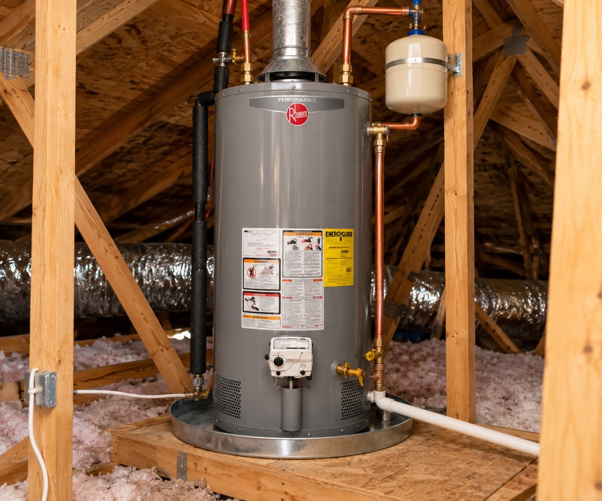

Water Heater Replacement
Swap an existing tank that is leaking, rusty, or past the point of another repair. This is the highest-intent page if you already have a unit in the home.
Replacement detailsRESIDENTIAL WATER HEATERS
Capital Water Co. replaces and installs residential water heaters for homeowners in Baton Rouge, LA. If the tank is leaking, running out of hot water, or due for replacement, request a quote for the address.
WHAT WE CAN HELP WITH
Most requests start the same way: the tank is old, leaking, or no longer keeping up. We focus on residential water heater replacement, new tank installation, and electric water heater replacement in Baton Rouge, Prairieville, Gonzales, Denham Springs, Central, Zachary, and Geismar.
Swap an existing tank that is leaking, rusty, or past the point of another repair. This is the highest-intent page if you already have a unit in the home.
Replacement detailsFirst-time installs and upgrades where the home needs a new tank, a different capacity, or a cleaner utility-room layout.
Installation detailsDedicated help for electric tank replacements, including sizing and electrical requirements at the existing location.
Electric replacement
SOUTH LOUISIANA HOMES
FREQUENTLY ASKED
We serve homeowners in Baton Rouge and nearby communities including Prairieville, Gonzales, Denham Springs, Central, Zachary, and Geismar. We do not operate a branch office in each town.
We currently take requests for residential water heater replacement, new tank installation, and electric water heater replacement. Gas, tankless, repair-only, and emergency dispatch offerings are reviewed case by case until those services are listed as generally available.
Attic work often takes extra labor because of access, removal of the old tank, and getting the new unit into place. The quote depends on the house, not a flat attic fee.
Use the form on this page with your name, phone, email, property address, heater type, installation location, and a short description of the issue. You can also call (225)-831-7583.
REQUEST YOUR FREE QUOTE
Tell us the address, the type of water heater in the home if you know it, and what is going on. We use the same consultation form that sends requests to our office. Call (225)-831-7583 if you would rather talk through availability.
Related pages: water heater replacement, water heater installation, electric water heater replacement, and replacement cost factors.